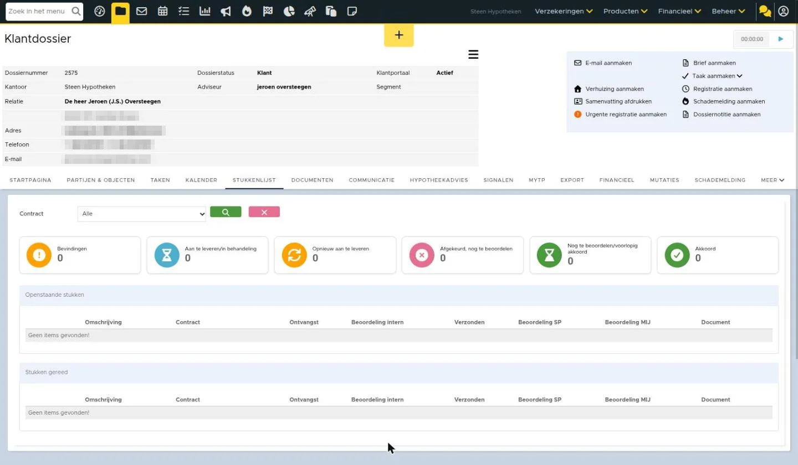

Stukkenlijst gebruiken
De stukkenlijst is de schakel voor het aanleveren van documenten. De klant kan middels de Digimap of UwKluis / Online klantportaal zijn stukken aanleveren en jij kunt de stukken weer doorzenden naar de maatschappij. De stukkenlijst speelt hierin een centrale rol. Deze is te vinden in het klantdossier – tabblad stukkenlijst. Hieronder worden de mogelijkheden van de stukkenlijst verder toegelicht.
Stukkenlijst aanmaken
De stukkenlijst kan je handmatig aanmaken of deze wordt aangemaakt vanuit het DA bericht van de maatschappij. De stukken hebben een naam. Met tags kan je zelf instellen dat er klantgegevens worden getoond in de naam van een stuk. Een stuk heet dan bijvoorbeeld ‘Identiteitsbewijs Dirk Janssen’. Dit doe je wanneer je handmatig een stuk toevoegt of wanneer je een stukkenlijst template aanmaakt.
Indeling stukkenlijst
De stukkenlijst wordt onverdeeld in openstaande stukken en stukken gereed. Voor openstaande stukken is er nog actie vereist, bijvoorbeeld intern beoordelen, beoordelen door de maatschappij, of versturen naar de geldverstrekker. De stukken die gereed zijn, staan onderin de stukkenlijst.

Filteren in de stukkenlijst
Om snel inzicht te krijgen in de status van documenten, zijn bovenaan de stukkenlijst tellerblokken toegevoegd. Deze blokken geven zowel een overzicht van de aantallen per status als de mogelijkheid om te filteren.

- De tellerblokken zijn klikbaar en filteren de stukkenlijst direct op de bijbehorende status.
- Het aan zetten van het filter doe je door op het blok te klikken, en door nog een keer op het blok te klikken zet je het filter daarna weer uit.
- Alleen één filter kan tegelijk actief zijn.
- Een document kan zowel bevinding(en) als een status hebben en dus in meerdere tellers en filters naar voren komen.
Status van stukken
Statusiconen
Elk icoon in de stukkenlijst geeft een status van een stuk aan, bijvoorbeeld of het stuk gereed is of dat er nog actie benodigd is. De kleuren staan voor het volgende:
| Icoon | Status | Betekenis |
| Geen icoon in de stukkenlijst. Icoon voor de filter knoppen:  | Aan te leveren/ in behandeling | Deze staat nog volledig open. Er is nog geen document aangekoppeld en niet intern beoordeeld. |
 | Opnieuw aan te leveren | De status interne beoordeling is afgewezen of de maatschappijstatus is ‘Opnieuw aan te leveren’. |
| Afgekeurd, nog te beoordelen | De maatschappijstatus is ‘Afgekeurd nog te beoordelen’ of de status van de serviceprovider is ‘Afgekeurd’. In deze status is vastgesteld dat het aangeleverde document niet voldoet aan de eisen. Een nieuwe, juiste aanlevering is noodzakelijk. | |
 | Nog te beoordelen/ voorlopig akkoord | Het stuk is bijna gereed en voldoet niet aan de andere voorwaarden voor de kleur. |
 | Akkoord | Het stuk is gereed. De maatschappij-beoordeling is goedgekeurd OF het stuk is niet via een DA bericht verstuurd/ontvangen maar is wel intern goedgekeurd. |
 | Vervallen | De status geeft aan dat het aangeleverde document of de aanvraag niet meer geldig is, bijvoorbeeld door intrekking of verloop van tijd. Als er stukken verwijderd worden uit de stukkenlijst die reeds verzonden zijn met een DA-bericht naar het intermediair moet er na deze actie een DA-bericht verstuurd worden waarin dit verwijderde stuk de status “Vervallen” krijgt. |
Bevindingen
In de stukkenlijst kan een document een bevinding hebben. Een bevinding geeft aan dat er extra aandacht nodig is bij een document, bijvoorbeeld door afwijkende data of een mutatie. Meer over de soorten bevindingen staat in het artikel Controle geldigheid document en andere functionaliteiten.
Als een bevinding niet relevant is voor jouw controle, kun je deze negeren. Hoe je bevindingen kunt negeren, wordt uitgelegd in dit artikel.
| Icoon | Status | Betekenis |
 | Bevindingen | Er zijn bevindingen bij dit stuk. Bijvoorbeeld er is afwijkende data gevonden bij een stuk in de stukkenlijst, de geldigheid van het stuk verloopt, er zijn één of meerdere bevindingen gevonden bij automatische controle, of er is een mutatieverzoek. |
Stukken toevoegen aan stukkenlijst
De maximale bestandgrootte van een stuk is 30 MB. Het toevoegen van stukken kan op 2 manieren: zelf uploaden of door de klant laten uploaden.
Klant uploadt stukken
In de Digimap of UwKluis / Online klantportaal ziet de klant altijd zijn/haar lijst met documenten. De klant ziet hier de reeds geüploade stukken (inclusief status).
De documenten die de klant aanlevert via de Digimap of UwKluis / Online klantportaal worden automatisch gekoppeld aan het stuk en komen daarnaast te staan onder documenten. Bij documenten bepaal je wat de klant wel of niet ziet.
Wil je dat een stuk nooit wordt opgevraagd in de Digimap/Uwkluis? Verwijder dan het stuk uit de template stukkenlijst.
Zelf uploaden
Het is ook mogelijk om zelf te documenten toe te voegen, op de volgende manieren:
- Documenten in een e-mail aan stukken koppelen.
- Documenten vanuit het tabblad ‘Documenten‘ in het klantdossier koppelen aan stukken.
- Handmatig uploaden via het ➕icoon in het tabblad ‘Stukkenlijst’.
Controle geldigheid document
Hier lees je meer over de controle geldigheid document.
Stukken intern beoordelen
Hier lees je meer over intern beoordelen van de stukken.
Document tekenen voor gezien
Let op: alleen beschikbaar in eBlinqx, niet in eBlinqx Connect
Een identiteitsbewijs moet niet alleen aangeleverd worden door de klant, het moet ook daadwerkelijk gezien zijn door de adviseur. Om dit gemakkelijk vorm te geven kan je nu met één knop automatisch het document voor gezien aanmerken.

Op het document komt dan de naam van de adviseur, handtekening, kantoorlogo en een datum te staan.

Het document getekend voor gezien blijft gekoppeld aan het stuk. Het originele document wordt opgeslagen onder het tabblad Documenten.
Er zijn wat voorwaarden en instellingen voor deze functie. Die zijn als volgt:
Voorwaarden
- Alleen beschikbaar in eBlinqx
- De knop ‘Document tekenen voor gezien’ komt zichtbaar als je het stuk bewerkt en in het scherm waarin je het stuk intern beoordeeld
- de knop is alleen zichtbaar bij het type soort document identiteitsbewijs en verblijfsvergunning. Ook moeten ze het protocol HDN hebben. Dit kan je terugzien in Soort Documenten Beheer
Daarnaast gelden nog de volgende voorwaarden:
Aangemerkt als adviseur, acceptant of behandelaar
Om van deze functionaliteit gebruik te kunnen maken moet je als gebruiker aangemerkt zijn als adviseur, acceptant of behandelaar. Dit kan je, indien je de juiste rechten hebt, instellen/controleren in Beheer – Organisatie & Personen – betreffende gebruiker. Dan zie je rechts aan welke kantoren de gebruiker is gekoppeld en welke functies hij heeft. Via het wijzigingsicoon kan je de functies aanpassen.

Handtekening instellen
De adviseur kan zijn handtekening opslaan onder ‘Mijn Instellingen’. Hier heb je staan ‘Handtekening voor tekenen voor gezien’. Je klikt op ‘Bestand kiezen’ om jouw handtekening toe te voegen. Dit moet een .jpg of .png bestand zijn.

Gebruikers die toegang hebben tot Beheer – Organisaties & Personen kunnen deze handtekening daar niet inzien of wijzigen.
Logo instellen
Het logo wordt opgehaald vanuit de huisstijl die is ingericht. Hier lees je waar je deze huisstijl kunt instellen en waar je het logo kunt opvoeren. Let op: voor het instellen van de huisstijl dien je beheerdersrechten te hebben.
Zo ziet het er nu uit in eBlinqx Connect

Afbeeldingen bij dit artikel